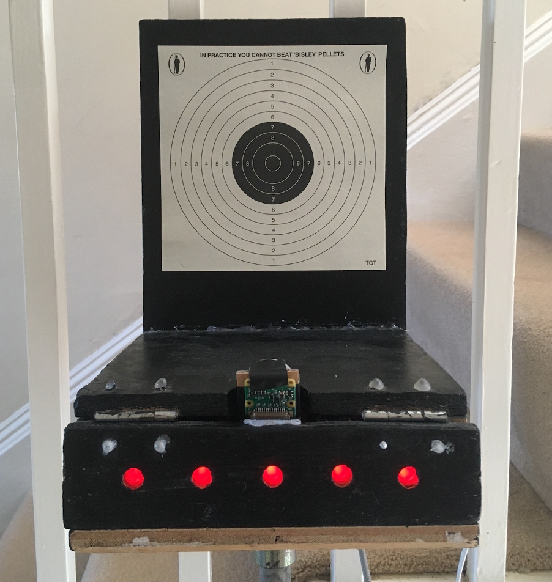
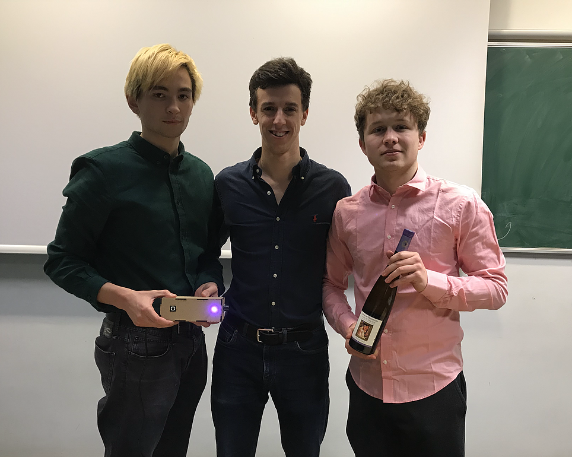
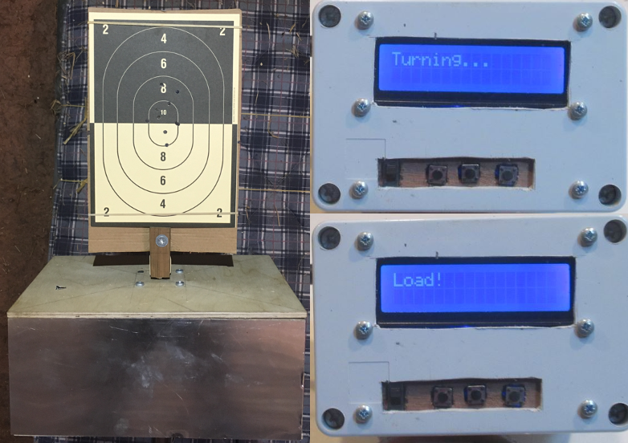
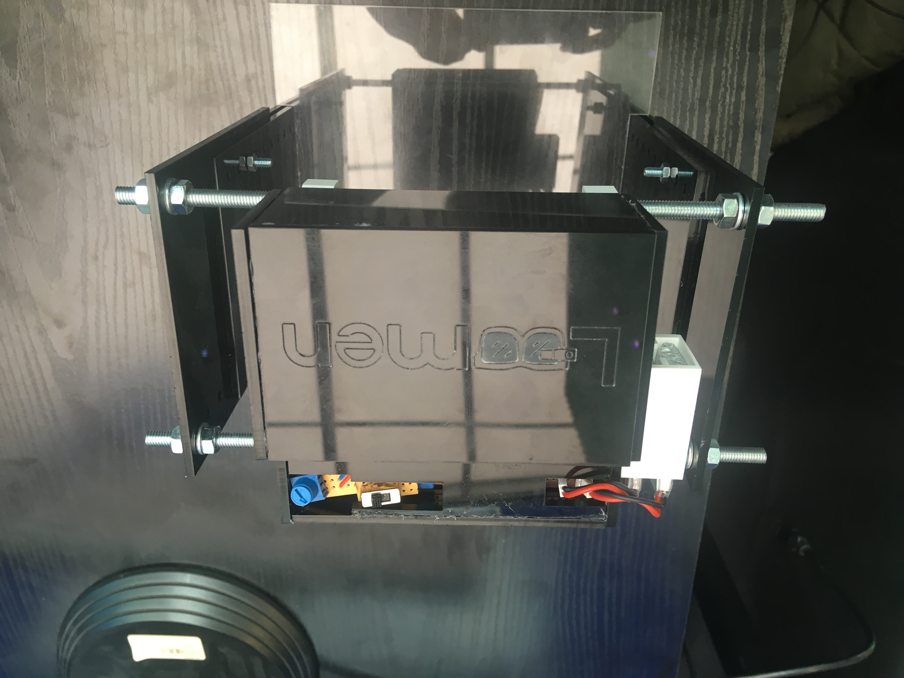
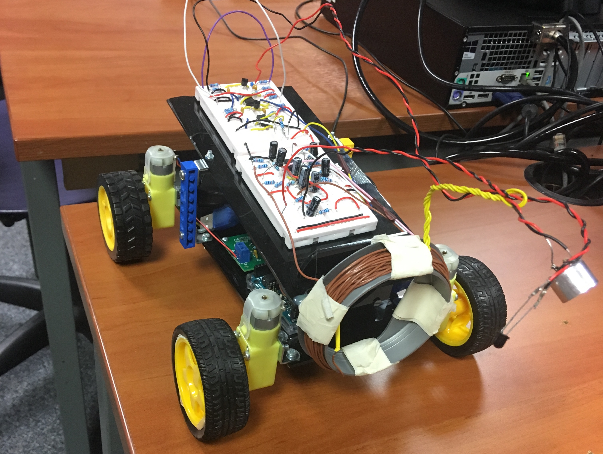
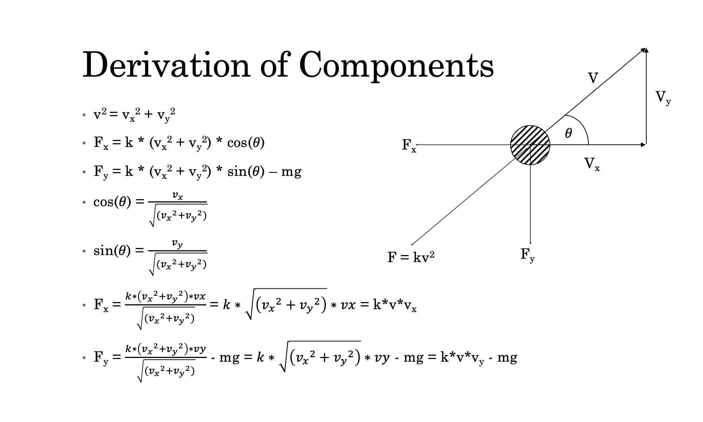

Hydroponics Scanner
For my third year university project, I and 4 others built a machine for IFPH to scan plants growing hydroponically in order to measure their growth and identify whether the plants had any diseases. Due to Covid-19, I was solely responsible for managing the hardware and computer vision side of the project.

MP Laser Target
I compete in Modern Pentathlon which besides the other disciplines involves laser pistol shooting combined with track running. Therefore, I have created a device to help me train which records my shots and displays it wirelessly to an app on my iPad. The data can then be uploaded to Dropbox for analysis post-training.
Learn more

Time For Wine
Time For Wine is a novel product that allows wine drinkers to measure the temperature of their wine with a temperature gun. The Time For Wine app then connects with the gun and recommends where their wine should be stored and an alarm is set which sounds when their wine is at the perfect temperature.
Learn more

Remote Turning Target
Before competing in Modern Pentathlon, I competed in Tetrathlon which tests pistol shooting ability with a turning target. To help me train, I created a remote system. The device has a training and competition mode. Since I no longer compete in Tetrathlons, I have donated the system to my old club and shooting coach, Patrick Bugg.
Learn more

Loomen - Vein Visualiser
Loomen is a product, made by a team of 7 2nd Year EEE students from Imperial College London, designed to aid injections in hospitals. Loomen achieves this by visualising veins using IR LEDs and a camera coupled with an IR pass filter. The image is then processed using computer vision software, OpenCV, and the optimal area to inject is displayed on an iPad.
Learn more

EEE Rover
For my first year university project we had to design and build a rover. It had to be able to identify a number of objects identical in appearance but each possessing different characteristics such as the frequency of wave it emitted and the presence of a magnetic field. It also had to be capable of traversing different terrains. An iOS mobile app was created to control the rover using UDP to communicate.
Learn more

Air Rifle Trajectory Software
During my A-levels, I was a very keen air rifle shooter. However, I experienced poor ballistic trajectories. As a result, I set out to solve this problem, as part of a physics project, by creating a C++ script that would predict the air rifle's ballistic path, considering many variables including distance, wind speed/direction, shooting angle etc.